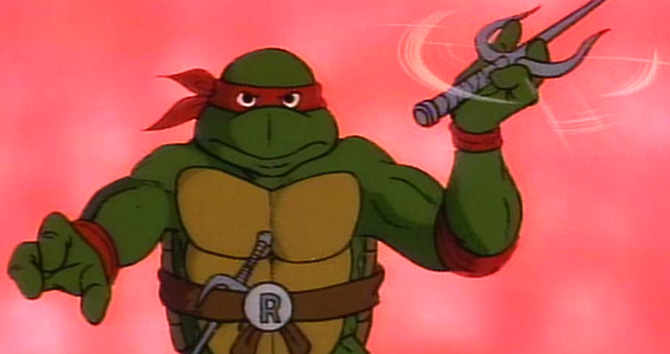

Рафаэль (англ. Raphael) или Раф (англ. Raph) — один из четырёх главных героев франшизы «Черепашки-ниндзя» и второй по старшинству среди братьев-мутантов, часто конфликтующий с лидером группы, Леонардо.
Рафаэль носит красную повязку, будучи единственной Черепашкой, сохранившей этот цвет с момента своего первого появления в Teenage Mutant Ninja Turtles #1 (Октябрь 1984). В качестве основного оружия боя Рафаэль владеет парными саями. В теле- и киноадаптациях он зачастую разговаривает с бруклинским акцентом. Среди братьев отличается темпераментом и цинизмом, представляя собой вспыльчивого, агрессивного, угрюмого, раздражительного и саркастического бунтаря. Источник гнева Рафаэля остаётся неизвестен, однако, в некоторых адаптациях, поведение персонажа связано с осознанием того факта, что он и его братья являются единственными представителями своего рода и обречены на одиночество.
Рафаэль часто соперничает со своим старшим братом Леонардо, так как завидует его лидерской позиции. Будучи наиболее физически сильным среди остальных братьев, он выполняет роль «мускулов» в команде. Своё имя он получил в честь Рафаэля Санти, итальянского художника эпохи Возрождения 16-го века. Он единственный из Черепашек-ниндзя, чьё имя не заканчивается на букву «О», несмотря на то, что полное имя его исторического прообраза — Раффаэлло.